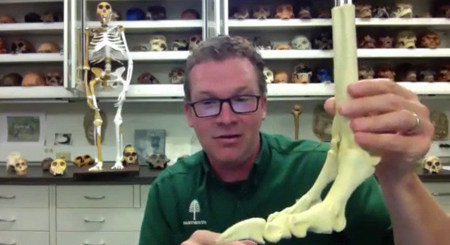

What Made Early Humans Smart
BY KEVIN BERGER
JUNE 30 2021 | 10 min read
Talking to Jeremy DeSilva about human evolution was so fun. As was reading his recent book, First Steps:
How Upright Walking Made Us Human. I learned something new and fascinating on every page. Do you picture
our hominin ancestors as hunters? I did. Not so much. “They were the hunted,” DeSilva writes. Let’s take
another look, as modern paleoanthropologists have, at the Taung child’s skull, one of paleontology’s
most famous fossils, the remains of a child from the species, Australopithecus africanus, discovered in
1924. A reanalysis of the Taung child, DeSilva tells us, showed talon marks in its eye sockets. “A bird
of prey, probably a crowned eagle, must have plucked the Taung child from the ground and carried it off
to be eaten.” See, I told you. Fun!
I might summarize DeSilva’s book and our interview as, “Everything I thought I knew about why humans
walk upright is wrong.” And DeSilva, a paleoanthropologist at Dartmouth College, is an insightful and
genial guide. I told him I was moved by his admission in First Steps that “for the first few minutes of
every visit with a new fossil, my calipers, camera, and scanner remain idle. I just sit, alone, with the
remains of my ancestors.” He smiled. “I love fossils,” he said. “When I first sit with a batch of
fossils, I think of them as individuals. I think, ‘Hey, a million years from now, if I’m lucky enough to
be a fossil, and there’s some paleontologist standing over me, I hope they take a moment to think about
me as an individual, and apply everything that they can possibly think of scientifically to squeeze
information out of my bones, to retell the story of what my life was like.’ That’s what we do as
paleoanthropologists.”
I began our interview by asking about the misperception that lingers to this day in his field and
specialty.

Did bipedalism contribute to humans being omnivores?
[Laughs]. Whenever someone asks me about the Paleo diet, I’ll say, “Which population are you talking
about? Are you talking about the humans who were living in Northern Asia, the humans who were living in
Europe, the humans who were living in Africa on a grassland environment, the humans who were living in a
forested region, the humans who were living on coasts?” During the Paleolithic, you’re going to have
very different diets depending on the human population we’re talking about. It’s because humans are
unbelievably, dietarily flexible. We can eat anything. In those varied habitats, we did eat everything.
There’s no one-size-fits-all diet for humans.
Here we are in 2021, living in an entirely different world, of course, than our hominin ancestors
did. How is bipedalism not adapted to contemporary life?
I threw out my back a couple of weeks ago and couldn’t walk. Our lower back is a mess. Most mammals move
on all fours and their spine is horizontal, it operates like a suspension bridge. By being bipedal,
we’ve turned that spine vertical, a bad idea. And to make sure that the torso is oriented over the hips,
and that all of our joints are aligned and balanced, there’s a curve that’s introduced into the spine. A
colleague of mine, Bruce Latimer at Case Western Reserve University, refers to this as a series of cups
and saucers. That’s how unstable the spine is. Slip discs are very common. We’re one of the few mammals
that develop scoliosis.
Then there’s the real nightmare: the foot. If you were going to challenge an engineer to design a
structure that has to be compliant enough to absorb forces from the ground, but then rigid enough to
push off the ground, and maybe even elastic enough that it can absorb some energy to push off the
ground, the last thing they would do is make it out of 26 parts. And your foot has 26 individual bones.
Between your two feet, you’ve got 52 bones, which is a quarter of your skeleton. A quarter of the human
skeleton is made up of foot bones. Why? It’s because we’re modified apes, and apes need all those foot
bones to grab onto trees; they use their feet in much the same way we use our hands. By evolving
bipedalism, natural selection can only work with pre-existing forms. It tinkered with this ape foot. I
think of it as using duct tape and paper clips to patch together and stiffen up this foot. And it’s good
enough, right? We’re here and we can move from point A to point B. But evolution doesn’t care about
comfort, and so we’ve got a lot of problems.
Is there a larger message about evolutionary biology in our anatomical problems?
Yes, and it comes back to what we were talking about before. Humans buffer themselves with culture. Is
natural selection still operating on humans? Absolutely. It has for the last 6 million years. Our foot
anatomy may be suboptimal and lead to problems. But we solve our problems culturally and socially.
Thankfully, we’re not twiddling our thumbs and waiting for natural selection to solve them for us.
BY KEVIN BERGER
JUNE 30, 2021